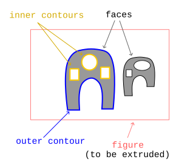
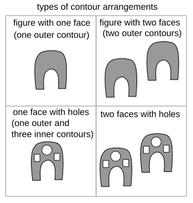
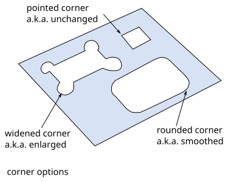
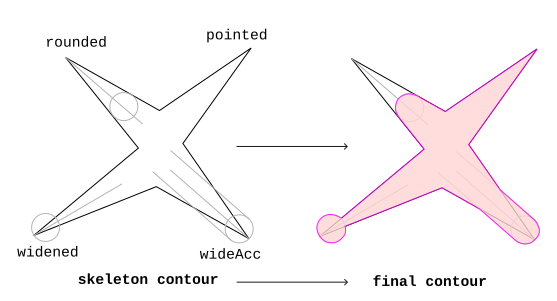
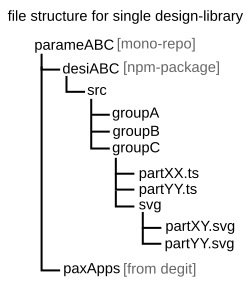
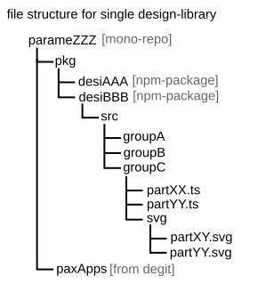

Geom's user docs
Starting a Parametrix project
The helper script create-parametrix generates the boilerplate for bootstraping a Parametrix project. The boilerplate is functional. It uses the Parametrix libraries geometrix, geomcli and geomui.
npm create parametrix@latest
# or
# npm create parametrix@latest Sam08
cd parameBlabla
npm install
git init && git add -A && git commit -m "Initial commit" # optional
inkscape pkg/desiBlabla/src/myGroup1/svg/src_myBox.svg # optional
vim pkg/desiBlabla/src/myGroup1/myBox.ts # optional
npm run ci
npm run preview
npm run clean # optionalWorkflow
The creation of a 3D part with Parametrix is composed by the following steps:
- Idea: brainstorming of the general ideas on a white-board
- Concept: With Inkscape draw all relevant faces and sections of the parts and define the parameters
- Architecture: Using the Geometrix library, describe in javascrit the 3D parts from the parameters
- Sizing: Compute the optimal values of the parameters for your use-case
- Export: Apply the parameter values and export the 3D parts
In the traditional approach, the steps 2, 3 and 4 might be merged together. The Parametrix workflow forces addressing those phases separately.
Javascript description
main steps of a Geometrix script
- import Geometrix
- [Optionally] import other parts
- define the list of parameters
- create the figures
- describe the contruction of the 3D parts
- [Optionally] define the links to the parameters of the sub-parts
hierarchy of the description
- a 3D part is an assembly of one or several extrusions of figures
- a figures consists of one or several contours
- a contour is either a circle or a closed path made of lines and arcs
Arrangement of contours
A figure is collection of faces. A face is a collection of contours. The first contour of a face is the outer contour. The remaining contours of the face are the inner contours. Finally the figure is a list of lists of contours. A contour should never cross itself or an other contour. Two contours are either side-by-side or one-include-the-other. /

The 4 types of figures:

- .addMainOI() : method to add a face to a figure.
- .addMainO() : method to add an outer contour (without holes) to a figure.
faceA = [ctrOuter, ctrInner1, ctrInner2];
myFigure.addMainOI(faceA);
myFigure.addMainOI([fBctrO, fBctrI1, fBctrI2, fBctrI3]);
myFigure.addMainOI([fCctrO]);
myFigure.addMainO(fDctrO);Corners
For each contour, geometrix lets you modify the shape of each corner individually as following:
- pointed (a.k.a. unchanged corner) [default]
- rounded with radius R (a.k.a. smoothed corner)
- widened with radius R (a.k.a. enlarged corner)
- wideAcc with radius R (a.k.a. enlarged corner for complete accessibility)


Export options
SVG
A 2D drawing of one of the figures. It can be visualized and edited by inkscape.
inkscape path/to/my/exported/file.svgDXF
A 2D drawing of one of the figures. It can be visualized and edited by librecad.
librecad path/to/my/exported/file.dxfOpenSCAD
- install OpenSCAD
- run the exported script:
openscad path/to/exported-script.scad - press F6 or click on the menu design>render
openscad path/to/my/exported/file.scad
openscad -o path/to/my3Dfile.stl path/to/my/exported/file.scad
meshlab path/to/my3Dfile.stl
f3d path/to/my3Dfile.stlOpenJSCAD
Open the exported script with OpenJSCAD or use the CLI.
mkdir work_with_jscad
cd work_with_jscad
npm install -D @jscad/cli
npx jscad -v
npx jscad
npx jscad path/to/my/exported/file.js
npx jscad path/to/my/exported/file.js -o path/to/my3Dfile.stl
meshlab path/to/my3Dfile.stl
f3d path/to/my3Dfile.stlOpenJSCAD doesn't support parallel contours. If a figure contains several outer contours, they must be extruded one by one independently and then combined together with union.
FreeCAD
freecad
freecad.cmd path/to/my/exported/file.py
freecad.cmd path/to/my/exported/file.py my3Dfile
f3d path/to/my3Dfile.stlglTF
- Install gltf-transform
- Execute the exported script
- Visualize the generated gltf-file with this gltf-viewer
Technical details
Notes on Part-name
Two design-definition could have the same partName. This is not recommended but possible. In this case if they have parameters with identical name, their values will be shared. Also the map (partName: link) will allow you defining a single link per partName. So one of your design-definition can not be pointed by the link.
SVG files
The svg-files that describe a design and its parameters must be embedded in the design library. Per convention, those SVG-files are stored in the sub-directory pgdsvg alongside the code index.js.
Here the key-elements of the package.json of a design-library:
{
"exports": {
".": {
"types": "./dist/index.d.ts",
"default": "./dist/index.js"
}
},
"files": [
"dist",
"!dist/**/*.map",
"!dist/**/*.test.*",
"!dist/**/*.spec.*"
],
"scripts": {
"svgo1": "svgo -f src/facade/svg -o dist/pgdsvg/",
"svgo2": "svgo -f src/menuiserie/svg -o dist/pgdsvg/",
"svgo3": "svgo -f src/chaudronnerie/svg -o dist/pgdsvg/",
"svgo": "run-s svgo1 svgo2 svgo3",
"clean": "rimraf dist dist2 node_modules"
},
"dependencies": {
"geometrix": "^0.5.49"
},
"devDependencies": {
"rimraf": "^6.0.1",
"svgo": "^4.0.0"
}
}Here the key-elements of the package.json of the associated UI-library:
{
"scripts": {
"cp_pgdsvg": "fse copy ../../node_modules/desi78/dist/pgdsvg static/pgdsvg",
"ci": "run-s cp_pgdsvg build lint check test:unit:once",
"clean": "rimraf .svelte-kit build node_modules static/pgdsvg"
},
"devDependencies": {
"@ata060/fse-cli": "^0.1.9",
"rimraf": "^6.0.1"
}
}design-library organisation
The npm-package of a design-library is stored in mono-repo even if we have a single library. This is because we also store in the repo the associated npm-packages (desiAbc-cli, desiAbc-ui and desiAbc-uis).
In a design library, you can create sub-folders. Each folder has its own svg folder.

If you have many designs and you want to distribute them in several packages, then you can create several design-libraries in your mono-repo.
